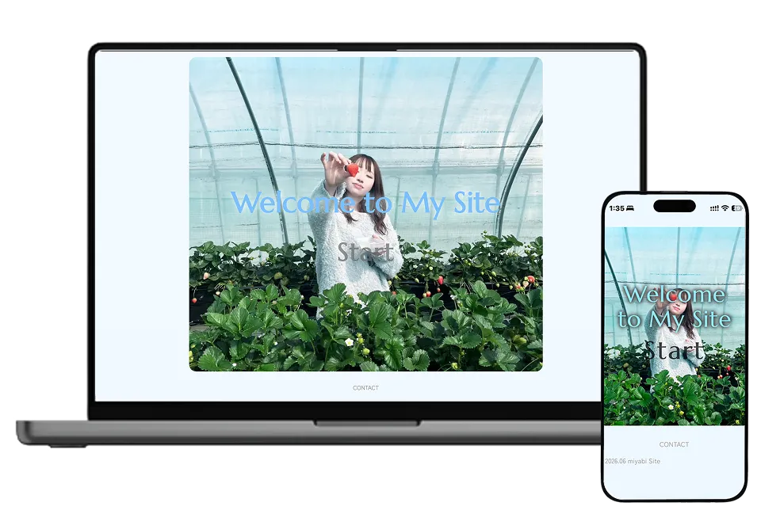

PROFILE SITE
- WEB SITE
- PROFILE
受講2か月目、2回目の課題で制作した
私の自己紹介サイトです。

Project Overview
- Role
- Design / Coding
- Tools
-
- Figma
- HTML
- CSS
- JavaScript
- ChatGPT
サイト内に使用されている画像は
生成AIによるものです。 - Period
- 2.5 days
Concept
プロフィールを通して、わたし自身のことを知ってもらうための自己紹介サイトを制作しました。
好きなものや興味のあることなどをまとめ、情報を読むだけではなくサイト全体の雰囲気からも
自分らしさが伝わることを意識しています。
親しみやすさと見やすさを大切にしながら、楽しんで見てもらえるプロフィールサイトを目指しました。
プロフィールを通して、私自身のことを知ってもらうため 自己紹介サイトを制作しました。
好きなものや勉強してきたスキルなどをまとめ、 情報だけでなく、サイト全体の雰囲気からも自分らしさが 伝わることを意識しました。
Target
- 想定ユーザー
- わたしのことを初めて知る人
- 目的
- プロフィールや好きなものなど、自分のことを知ってもらうためのサイトを制作しました。
情報だけでなく、デザインや色、レイアウトからも自分らしさが伝わることを目的としています。 - 課題
- 自分に関するさまざまな情報を掲載しながらも、内容が散らばって見えないよう整理する必要がありました。
情報の優先順位を考え、初めて見る人でも読み進めやすく、自分らしさも感じてもらえる構成を課題としました。
- 想定ユーザー
- わたしのことを初めて知る人
- 目的
- プロフィールや好きなもの、これまでの経験などを 通して、自分のことを知ってもらうこと。 色・レイアウトなどから自分らしさが伝わること。
- 課題
- 自分の情報が散らばって見えないよう 整理する必要がありました。情報の優先順位を考え、 初めて見る人に読み進めやすく、自分らしさも感じて もらえる構成を課題としました。
Design
水色と白をベースに、やわらかく親しみやすい印象に仕上げました。
タイポグラフィは、デザイン性のある英字と読みやすい日本語書体を組み合わせ、
かわいらしさと可読性のバランスを意識しています。
UIでは、プロフィールや好きなものなど、それぞれの情報を分かりやすく区切りながら、
サイト全体に統一感が出るよう余白や配置を整えました。
水色と白をベースに、やわらかく親しみやすい 印象に仕上げました。
タイポグラフィは、デザイン性のある英字と読みやすい 日本語書体を組み合わせ、かわいらしさと可読性の バランスを意識しました。
UIでは、プロフィールや好きなものなど、 それぞれの情報を分かりやすく区切りながら、 サイト全体に統一感が出るよう余白や配置を整えました。
Process
情報整理 → Wireframe → Design
→ Implementation。
Design Preview